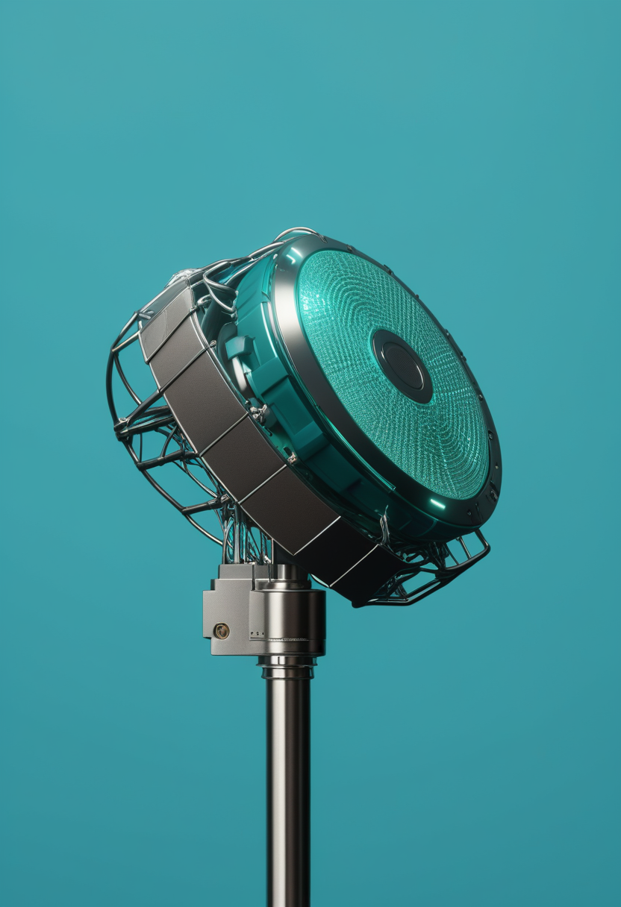
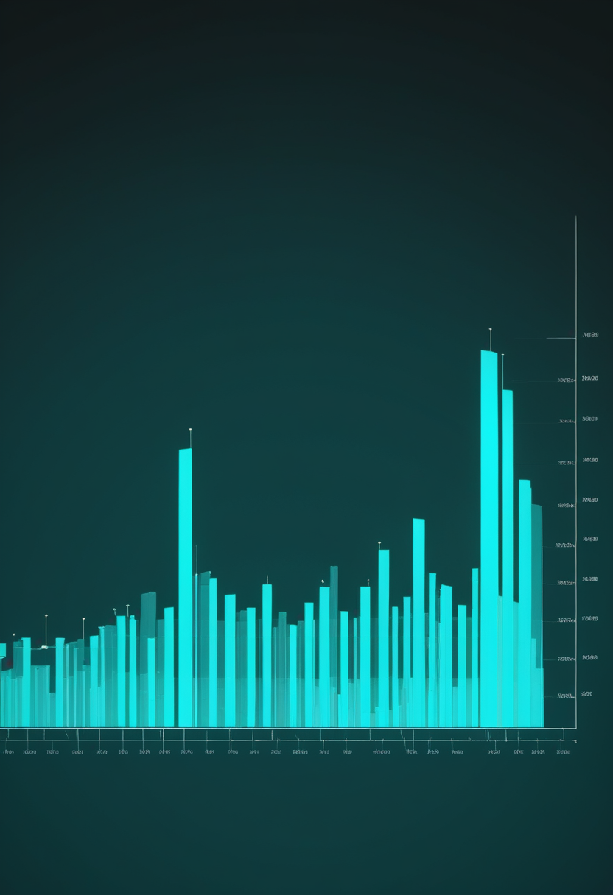
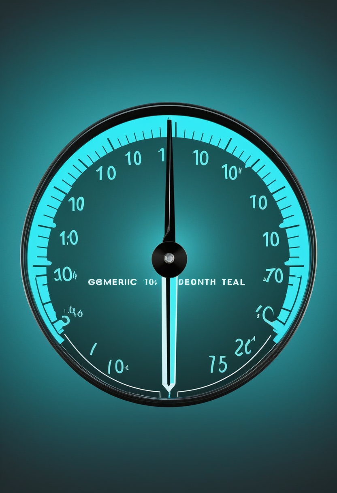

日曜日の便り。9月11日、FDAがScholar RockのISEMBYLD(アピテグロマブ)を承認した。SMAの治療対象を運動ニューロンの外側、筋肉そのものへ広げた初めての薬である。本紙が9月30日のPDUFAを数えてきた審査は、19日前倒しで終わった。命の章では、この承認に加え、サラネルセンの評価が15〜60歳の思春期・成人へ広がったSOLAR試験を伝える。自由の章では、中国NEOが装置より先に診療報酬コードと用語規格を整えたこと、Tobiiの視線計測が乳児の自閉症スクリーニングへ用途を広げたことを報じる。基盤の章では、DRCのブンディブギョ型エボラが確定7,022例・死亡3,398人・62保健区に達し、WHOが『発見の遅れ』を認めたこと、米国の麻疹の排除資格判定が11月まで持ち越されたことを伝える。畏敬の章では、MeerKATが数十億光年かなたの中性水素の信号を直接検出したこと、Quantinuumが誤り訂正の一式を98量子ビット機で実証したこと、ハンチントン病の遺伝子治療AMT-130の4年データが今月出ることを紹介する。美の章では、意識のアップロードを技術と哲学の両面から見積もる議論、死者のデジタル復活にニューロライツを当てる論考、そして中国雲南省の洞窟で見つかった19万年前からのデニソワ人の暮らしの跡という、三つの『人であることの手がかり』を取り上げる。
9月11日、FDAがScholar RockのISEMBYLD(アピテグロマブ、一般名apitegromab-mstn)を承認した。SMAに対して、運動ニューロンではなく筋肉そのものを標的とする初の薬である。対象はSMN2標的治療を受けている2歳以上の小児と成人で、4週ごとの点滴投与。第3相SAPPHIRE(2〜21歳の非歩行例188人)で、HFMSEが対照より2.2点改善した。本紙は9月30日の審査期限(PDUFA)を毎号数えてきたが、承認は19日前倒しで出た。2025年9月22日の完全回答書からちょうど1年、争点だった製造コンプライアンスは解けたことになる。
9月11日、FDAがScholar RockのISEMBYLD(apitegromab-mstn)を承認した。SMN2標的治療を受けている2歳以上の小児と成人が対象で、4週ごとに点滴で投与する(推奨用量10 mg/kg)。アピテグロマブは、筋肉の成長を抑えるミオスタチンの前駆体と潜在型に選択的に結合し、その活性化を妨げる完全ヒト型モノクローナル抗体である。承認の主たる根拠は第3相SAPPHIREで、2〜21歳の非歩行例188人を52週追跡し、運動機能の指標HFMSEが対照群より2.2点改善した。3点以上改善した人の割合は、投与群34.2%に対しプラセボ群13.5%だった。既存のSMA治療はいずれも運動ニューロンの側に働きかけるもので、失われた筋肉そのものを標的とする薬は初めてになる。価格は未設定で、ICERは年間4,600〜30,200ドルを費用対効果の目安として示していた。
次世代アンチセンス薬サラネルセン(BIIB115)の第3相は、乳児だけの話ではなくなった。本紙が前号までに扱ったSTELLAR群は乳児が対象で、STELLAR-1が生後42日までの発症前診断例、STELLAR-2がゾルゲンスマ投与歴のある生後7か月までの乳児である。これに加え、SOLAR試験が15〜60歳の思春期・成人を対象に動く。予定登録数は約90人で、SMA治療を受けたことがない人と、経口薬エブリスディ(リスジプラム)を服用中の人が入り、全員がサラネルセンの投与を受ける設計である。根拠となる第1b相では、ゾルゲンスマへの反応が十分でなかった小児の半数が、WHOの運動マイルストーンを少なくとも1つ新たに獲得したという予備解析が報告されている。年1回投与を狙う薬の評価が、乳児から成人まで通しで並んだ。
今日のSMA欄は、薬の対象年齢と標的部位がともに外側へ広がった日である。ISEMBYLDは運動ニューロンの外側の筋肉を初めて標的にし、サラネルセンは評価対象を乳児から成人まで伸ばした。本紙が数えてきたPDUFAの残り日数は、19日を残して意味を失った。次に数えるべきは、承認された薬が実際に届くまでの日数である。

中国の侵襲型BCIは、装置より先に制度が組み上がりつつある。arXivに公開された総説『Clinical Translation of Brain-Computer Interface in China: A Landscape』がその経緯を整理している。NeuracleのNEOシステムは2026年3月13日にNMPAのクラスIII医療機器承認を取得した。4人の実行可能性試験に続き、11病院で32人を対象とする多施設のGCP準拠登録試験を経ている。承認後48時間以内に、国家医療保障局がNEOに診療報酬コードを割り当てた。BCI医療機器の用語規格(YY/T 1987–2025)は2026年1月に施行され、分類と名称に関する指針の草案も3月に意見公募にかけられている。装置が世に出るより先に、支払いと分類の枠が用意された形である。
視線計測の用途が、操作するための入力から、状態を測るための指標へ広がっている。Tobiiは2月11日、視線計測器Tobii Eye Tracker 5LをButterfly Learningsの自閉スペクトラム症スクリーニング機器『Get Set Early』へ供給する設計採用を発表した。対象は生後12か月からの乳幼児で、カリフォルニア大学サンディエゴ校のKaren Pierceらの研究を基礎とする。インドで同種の機器として初めてCDSCOの認証を受け、臨床使用が認められている。同社はまた、汎用ウェブカメラで視線を測る研究者向けツールを投入した。基盤はTobii Nexusで、まず遠隔研究向けに提供し、施設内の統制環境で使う版は2026年後半の予定である。専用機を要した計測が、手元の機材へ降りてくる。
2本に共通するのは、技術の性能ではなく普及の器である。中国は診療報酬コードと用語規格を先に用意し、Tobiiは専用機を汎用機に置き換えて対象人口を広げた。装置が制度に組み込まれるほど、使う人が抱える不確かさは小さくなる。逆に言えば、制度の外にある装置ほど、その不確かさは大きいままである。

ECDCの集計によれば、DRCのブンディブギョ型エボラは9月10日までに確定7,022例・死亡3,398人、致死率は約48.4%である。本紙が前号で扱った9月9日時点の6,942例・3,349人から、1日で+80例・+49人。流行は7州62保健区に及び、これは全国167保健区の約37%にあたる。前号で報じた7州目のスュド・ウバンギ州は、ブル保健区が新たに加わる形で内訳に反映された。最も重いイトゥリ州は9月9日時点で5,508例・2,501人、36保健区のうち28保健区に広がっている。1日あたり80〜100例という増勢は8月から崩れていない。
WHOは9月10日のブンディブギョ型エボラ最新報で、一部の保健区について『地理的拡大が続き、症例が持続的に増えている証拠』があるとし、あわせて『症例の発見の遅れ』が封じ込めの妨げになり続けていると述べた。この二つは別々の問題ではない。見つかるのが遅ければ、その間に人は移動する。7州目の症例が、ルワンダとウガンダ、そして国内の南キブ・イトゥリ・チョポの各州を経てから西部で確定したことは、その帰結にあたる(渡航歴の経路は報道により記述に幅があり、要確認)。WHOは先月、流行州と国境を接する中央アフリカ共和国と南スーダンへ波及する恐れを指摘しており、Africa CDCも越境伝播の危険を重ねて警告している。

CDCの9月10日時点の集計で2026年の米国の麻疹は確定3,294例、2000年の排除宣言以降で最多のままである。本紙が注視してきた『米国は排除状態を失うのか』という問いは、いま日程の問題になっている。PAHO(汎米保健機構)の麻疹・風疹排除地域検証委員会(RVC)は、米国とメキシコの排除状態の審査を当初予定の4月から11月の年次会合へ動かした。理由は、2025年の流行についてゲノム解読を含む詳細な解析に時間を要するためとされる。流行同士が遺伝的につながっているかどうかが、資格の有無を決める。2026年の入院率は約8%で、2,289例だった2025年の約11%を下回っている。
エボラと麻疹は、どちらも『つながり』を測りかねている。DRCでは症例の発見が遅れ、その遅れが伝播の線を見えなくしている。米国では、流行同士の遺伝的なつながりを読み切るまで排除の資格を判定できない。数を数える技術は十分にあるのに、線を引く作業が追いついていない。
南アフリカの電波望遠鏡MeerKATが、数十億光年かなたの中性水素ガスから届く極めて微弱な電波を直接検出した。マンチェスター大学と西ケープ大学を中心とする国際チームによる成果で、約96時間分の観測データから、宇宙史の異なる2つの時期の信号を取り出した。光が地球に届くまでに要した時間はおよそ40億〜50億年である。この手法は銀河を1個ずつ数えるのではなく、広い領域の水素が発する光を合算して測る。信号は前景放射や人工の電波干渉、装置由来の効果に埋もれており、これを分離できたこと自体が到達点にあたる。数百万光年の規模で水素の分布をたどれたことで、はるかに広い3次元の宇宙地図を描く道が開いた。論文はThe Astrophysical Journal Lettersに掲載された。
Quantinuumは9月9日、誤り訂正アーキテクチャHelixを98量子ビットのイオントラップ機Helios上で検証したと発表した。符号化を施した論理量子ビットが、符号化していない物理量子ビットの水準を上回るという、耐故障計算の前提となる関係を、記憶・ゲート・符号間もつれの一式で示した内容である。論理記憶の誤り率は世界記録を更新し、論理クリフォードゲートと符号間もつれの忠実度も改善したとする。同社はあわせて、イオントラップ型量子ハードウェアの製造を加速するための1億ドルのCHIPS法研究開発助成を確定させた。
uniQureのハンチントン病遺伝子治療AMT-130について、臨床試験の4年時点の結果が9月中に公表される見通しである。同剤はすでに米国と英国の規制当局へ申請済みで、今回の読み出しは審査の途上で出てくることになる。AMT-130はAAVベクターで治療遺伝子を脳の線条体へ直接送り込み、病因となる変異ハンチンチンタンパク質の産生を抑える設計である。ハンチントン病は進行を止める治療が存在しない遺伝性の神経変性疾患で、承認されれば初の疾患修飾療法となる。4年という観察期間は、この種の一回投与型治療で効果がどこまで持つのかを測る材料になる。
3本はいずれも『時間をかけて積んだものを、いま読み出す』話である。MeerKATは96時間分の観測を重ねて雑音の下から信号を引き上げ、Quantinuumは誤りを訂正する層を積み上げて物理の水準を越え、uniQureは4年の追跡でようやく持続性を語れる位置に来た。
意識を機械へ移せるかという問いが、思考実験から見積もりの対象へ移りつつある。MITマクガヴァン脳研究所が9月2日に公開した解説は、この主題を技術的な障壁と哲学的な難問の両面から扱っている。技術の側では、シナプス一つひとつの結合強度や神経修飾の状態まで含めて写し取る必要があり、コネクトームの配線図だけでは足りない。哲学の側では、完全な複製ができたとしても、それが本人の意識の連続性を引き継ぐのか、それとも別人が一人生まれるだけなのかという問いが残る。この問いには、いまのところ実験で決着をつける方法がない。2025年10月の全脳エミュレーション現状報告は、実現までを最低でも30〜40年先と見積もっている。
故人の声や姿、人格をAIで再現する『デジタル復活』をめぐり、査読誌AJOB Neuroscienceで議論が組まれた。土台となるのは、死後のアイデンティティを異文化間のニューロライツの枠組みで捉え直す論考である。これに対し、デジタル復活が神経技術とニューロライツの境界をどこまで押し広げるのかを問う論考と、権利の言葉だけでは足りないとして信頼・自律・そして『ニューロデューティ(神経に関わる義務)』を軸に据える論考が並んだ。争点は、精神的プライバシー、認知的自由、そしてAIが生成した表象の真正性である。生きている人の脳データを守る枠組みを、本人が同意を表明できない死者にどう及ぼすのか。権利の主体がいない場所で、誰の何を守るのかという問いになる。
中国雲南省の蝙蝠洞(ビエンフー洞窟)から、デニソワ人の暮らしの跡を19万年分たどれる記録が見つかった。Nature誌に9月9日発表されたこの研究は、化石・石器と骨角器・動物遺存体・環境記録を一つの地層記録に重ね合わせている。デニソワ人の化石そのものは4本の歯・上腕骨の一部・頭骨片2点の計7点で、うち上腕骨(橈骨)はこの系統で初めての発見であり、これまで1本の指骨と肋骨でしか分からなかった四肢の骨格を初めて直接示す。これで知られているデニソワ人の化石総数は20点を超えた。針葉樹林に囲まれたこの洞窟で、道具を使いながら10万年以上を生きた痕跡が、化石の少なさで謎に包まれてきたこの人類系統の輪郭を、一つの土地に定住した暮らしとして初めて描き出す。
3本に共通するのは、人であることの証拠がどこに宿るかという問いである。MITは『複製できてもそれは本人か』と問い、AJOBは『本人がいなくなった後の表象を誰が守るか』と問い、雲南の洞窟は化石という最も古い形の証拠を19万年分積み増した。デジタルの複製が精緻になるほど、その対極にある一片の骨の重みも、静かに増していく。
日曜日の便り。9月11日、FDAがScholar RockのISEMBYLD(アピテグロマブ)を承認した。SMAの治療対象を運動ニューロンの外側、筋肉そのものへ広げた初めての薬である。本紙が9月30日のPDUFAを数えてきた審査は、19日前倒しで終わった。命の章では、この承認に加え、サラネルセンの評価が15〜60歳の思春期・成人へ広がったSOLAR試験を伝えた。自由の章では、中国NEOが装置より先に診療報酬コードと用語規格を整えたこと、Tobiiの視線計測が乳児の自閉症スクリーニングへ用途を広げたことを報じた。基盤の章では、DRCのブンディブギョ型エボラが確定7,022例・死亡3,398人・62保健区に達し、WHOが『発見の遅れ』を認めたこと、米国の麻疹の排除資格判定が11月まで持ち越されたことを伝えた。畏敬の章では、MeerKATが数十億光年かなたの中性水素の信号を直接検出したこと、Quantinuumが誤り訂正の一式を98量子ビット機で実証したこと、ハンチントン病の遺伝子治療AMT-130の4年データが今月出ることを紹介した。美の章では、意識のアップロードを技術と哲学の両面から見積もる議論、死者のデジタル復活にニューロライツを当てる論考、そして中国雲南省の洞窟で見つかった19万年前からのデニソワ人の暮らしの跡という、三つの『人であることの手がかり』を取り上げた。
では、また明日の朝に。 — JaH